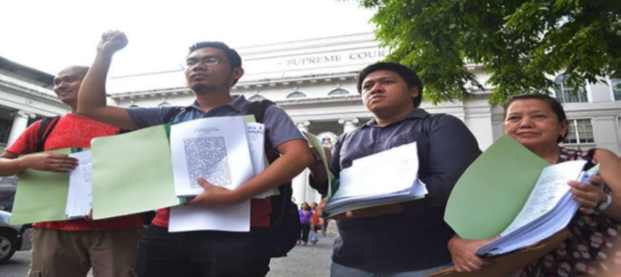

Ayon kay G. Eugene Y. Evasco, ang anomang wika sa daigdig — tulad ng wikang Filipino — ay nalilikha, nililinang, pinagyayaman, at hindi lamang basta isinilang. Kaya naman masasabi ring ang wika ay may kakayahang makiangkop sa mga pagbabagong nagaganap sa lipunang pinagsisilbihan.
Malinaw na ipinapahayag ni E. Evasco ang kalakasan ng wika pagdating sa usapin ng paggamit nito sa umiiral na buhay ng isang bansa.
Sa panahon ni dating Pangulong Gloria Macapagal-Arroyo, inilabas ang EO 210 na nag-aatas na ibalik ang Ingles bilang pangunahing wikang panturo sa bansa. Nilimitahan ang paggamit ng wikang Filipino at itinakda na lamang ito sa mga asignaturang Filipino at Araling Panlipunan.
Sinusugan pa ito ng Kongreso sa pamamagitan ng House Bill 4701 – "Act Prescribing English as Medium of Instruction in Philippine Schools".
Ngunit taliwas ito sa mga obserbasyon ng mga eksperto. Ayon sa United Nations (UN):
“Languages are indeed essential to the identity of group and individual and to their peaceful coexistence.”
Marami ang nananatiling naniniwala na ang mga umiiral na wika sa Pilipinas ay sagot sa mga suliranin ng pambansang edukasyon.
Ayon kay Dr. David San Juan, konvenor ng Tanggol Wika at dalubguro sa De La Salle University, ang wikang pambansa ay tanging wika ng mga kilusang panlipunan.
Sa inilabas na CHED Memo CMO #20, Serye ng 2013, inalis ang mga asignaturang Wika, Agham Panlipunan, at Kasaysayan sa antas tersyaryo.
Matapos nito, nagkaroon ng mga protesta na pinangunahan ng kilusang Tanggol Wika sa pamumuno ni Dr. David San Juan. Isa sa mga mahahalagang dokumentong inilathala ay:
"Alyansa ng Mga Tagapagtanggol ng Wikang Filipino / TANGGOL WIKA: Internal na Kwento, Mga Susing Argumento at Dokumento" (2017)
Ayon kay Bienvenido Lumbera:
“Sa pagtanggap natin sa wika, pumapaloob tayo sa isang lipunan at nakikiisa sa mga taong naroon.”
Samakatuwid, ang kamalayan natin bilang indibidwal ay karugtong ng kamalayan ng iba sa lipunan. Kapag may kapangyarihang sumakop sa kamalayan ng kapwa, tayo rin ay napapasailalim sa kapangyarihang iyon.
Ang sariling wika ay hindi nakakabawas sa katalinuhan o karunungan. Sa halip, ito ay maaaring gamitin sa iba't ibang larangan ng agham, edukasyon, at lipunan nang may buong bisa at dignidad.
